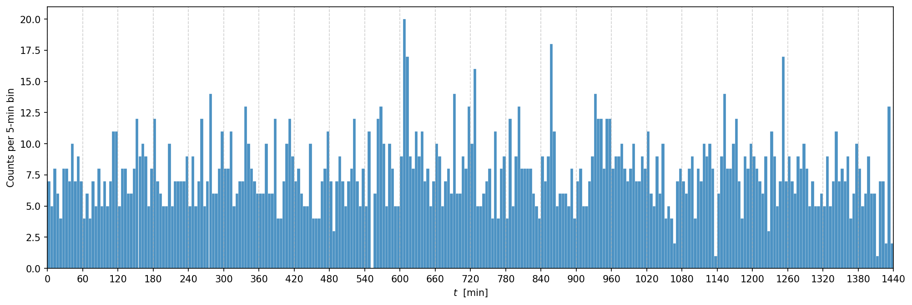

Lab 9: Bayesian Analysis I#
For the class on Wednesday, February 12th
In this and the next labs, we are going to do a full Bayesian analysis on the alpha particle detector scenario that we have discussed in class earlier. Here’s the setup (you’ve seen this already; it’s repeated here for your convenience).
You have a detector that detects alpha particles and records the time of each detection. The detector produces the data as a list of incident times, \(t_1, t_2, \cdots\). You know there is background radiation that results in background noise. The background noise is random but has a uniform probability density in time. You collected the data during a 24-hour period and want to check if there was an event that produces a burst of alpha particles during that period. From your physics knowledge, you know that:
The background level is of the order of 1 incident per minute (but you don’t know the exact rate).
The event is supposed to produce a burst of alpha particles that is at least 3 times higher than the background level during the burst.
The event happens very rarely (it’s very unlikely it happens more than once during a 24-hour period).
One burst typically lasts for about 5 minutes (but you don’t know the exact length).
A. Model Construction#
The first step is to construct a model based on our knowledge of the system. As we discussed in class, we sometimes will need to make assumptions about the system to fully specify the model.
We don’t know the exact rate of the background level or the signal level. We also don’t know the exact duration of the burst. We can leave all these as parameters in our model.
We also don’t know the exact time when the burst happened, so that needs to be a parameter as well. We do know that the burst happens very rarely, so for now let’s assume there’s at most one burst in the 24-hour period.
We know the background incidents have a uniform probability density in time. But we don’t know whether the rate during a burst would stay constant or go up and down gradually. For now, let’s assume the rate also stays constant (uniform) during the burst.
With all of the above, our model would look like this:

Here, we have four parameters:
\(r_{\text{bg}}\) is the rate of the background level (in incidents per minute),
\(s\) is the ratio of the signal rate to the background rate,
\(t_{\text{start}}\) is the time when the burst happened (in minutes since the start of the 24-hour period), and
\(t_{\text{duration}}\) is the duration of the burst (in minutes).
📝 Questions:
Derive the expected value of the total number of incidents (i.e., alpha particle detection) during the 24-hour window. Express your answer in terms of the four parameters above. Note that there are 1,440 minutes in a 24-hour period.
What is the probability density of detecting one incident at \(t_1\), if \(t_1 < t_{\text{start}}\)? Express your answer in terms of the four parameters above. Properly normalize the probability density.
What is the probability density of detecting one incident at \(t_2\), if \(t_{\text{start}} < t_2 < t_{\text{start}} + t_{\text{duration}}\)? Express your answer in terms of the four parameters above. Properly normalize the probability density.
Given this model, what conditions of the parameters correspond to the null hypothesis (background only)?
// Write your answers to Part A here
B. The Likelihood Function#
Let’s say the observed data (the actual times of the alpha particle detection incidents) is \(t_1, t_2, \cdots, t_N\), where \(N\) is the total number of incidents detected.
If we assume the incidents are independent events, then the likelihood function is the product of the probability densities of each incident, which we have calculated in A2 and A3 above.
Moreover, the total number of incidents, \(N\), would impact the likelihood function as well. The likelihood should be greater if the observed \(N\) is closer to the expected value of the total number of incidents. We often model the number of event occurrences as a Poisson distribution, with the rate parameter being the expected value of the total number of occurrences.
We can write the likelihood function as:
where \(\boldsymbol\theta = (r_{\text{bg}}, s, t_{\text{start}}, t_{\text{duration}})\) is the vector of our parameters, \(\mathrm{Pois}\) is the Poisson distribution, \(\lambda(\boldsymbol\theta)\) is the expected value of the total number of incidents as you derived in A1, and \(p\) is the probability density of detecting one incident at a given time as you derived in A2 and A3.
📝 Questions:
Based on your answers to A2 and A3, write down \( \sum_{i=1}^N \log p(t_i | \boldsymbol\theta)\). Express your answer in terms of the four parameters above, the number of events that are during the burst (\(N_{\text{burst}}\)), and the number of events that are outside the burst (\(N_{\text{outside}}\)).
🚀 Tasks:
Based on your answer to B1, implement the log-likelihood function in Python below.
// Write your answers to Part B here
# Importing the libraries
import numpy as np
import scipy.stats
import scipy.optimize
import matplotlib.pyplot as plt
import requests
total_time = 1440 # 24 hours in minutes
# Implement the Part B task here
def log_likelihood(r_bg, s, t_start, t_duration, data):
expected_total = ... # Implement the function based on your answer to A1
log_p_outside = ... # Implement the function based on your answer to A2
log_p_during = ... # Implement the function based on your answer to A3
data = np.ravel(data)
N_total = len(data)
N_during = np.count_nonzero((data >= t_start) & (data < t_start + t_duration))
N_outside = N_total - N_during
return (
scipy.stats.poisson.logpmf(N_total, expected_total)
+ ... # Implement the term of the log-likelihood for incidents outside the burst period
+ ... # Implement the term of the log-likelihood for incidents during the burst period
)
C. Fitting to Data#
Now, let’s take a look at the observed data. The cell below loads the data from a file and plots the histogram of the time of the observed incidents.
data = np.fromstring(requests.get("https://yymao.github.io/phys7730/lab9_data.txt").text, sep="\n")
fig, ax = plt.subplots(figsize=(16,5), dpi=150)
ax.hist(data, bins=np.arange(0, total_time+1, 5), alpha=0.8, edgecolor="w", linewidth=0.2, color="C0")
ax.set_xlabel("$t$ [min]")
ax.set_ylabel("Counts per 5-min bin");
ax.set_xlim(0, total_time)
ax.set_xticks(np.arange(0, total_time+1, 60))
ax.grid(axis="x", linestyle="--", alpha=0.6);

Now, let’s see how our likelihood function behaves given this data set. The cell below plots the log-likelihood function that you implemented earlier.
However, it is not easy to visualize a 4D function (we have four parameters),
so we will only plot the log-likelihood function as a function of r_bg, and fix all other parameters by hand.
In ll_values_no_burst, we will store the log-likelihood values when there is no burst (i.e., \(r_{\text{sig}} = 0\)).
This case would correspond to our null hypothesis (background only).
In ll_values_with_burst, we will store the log-likelihood values when there is a burst.
For now, we will manually set the three parameters (s, t_start, and t_duration) based on some educated guesses
by looking at the histogram above.
We finally plot these both cases to compare them.
r_bg_values = np.linspace(0.5, 2.5, 21)
ll_values_no_burst = []
ll_values_with_burst = []
for r_bg in r_bg_values:
ll_values_no_burst.append(log_likelihood(r_bg=r_bg, s=3, t_start=0, t_duration=0, data=data))
ll_values_with_burst.append(log_likelihood(r_bg=r_bg, s=3, t_start=0, t_duration=5, data=data)) # change this line
fig, ax = plt.subplots(dpi=150)
ax.plot(r_bg_values, ll_values_no_burst, label="No burst")
ax.plot(r_bg_values, ll_values_with_burst, ls="--", label="With burst")
ax.set_xlabel('r_bg values')
ax.set_ylabel('Log-Likelihood')
ax.grid(True)
ax.legend();
🚀 Tasks and Questions:
In the cell above, try a few different values of
t_startin the line that starts withll_values_with_burst.append. How does the orange curve change as you changet_start? Do you ever see the orange curve surpass the blue curve with certain values oft_start? Briefly describe and explain your observations.
// Write your answers to Part C here
D. Flat Priors with Bounds#
Finally, let’s assume flat priors for all four parameters, but with some bounds imposed. This type of prior is also called a “top-hat prior”.
Since the priors are uniform within the bounds, if the maximum likelihood estimate of our parameter vector is also located within the bounds, then the maximum a posterior (MAP) estimate would be the same as the maximum likelihood estimate.
Let’s try to find the MAP estimate using the flat priors with the following bounds:
\(0.5 \leq r_{\text{bg}} \leq 2\),
\(3 \leq s \leq 5\),
\(-10 \leq t_{\text{start}} \leq 1440\), and
\(2 \leq t_{\text{duration}} \leq 8\).
# Parameters are r_bg, s, t_start, t_duration
bounds = scipy.optimize.Bounds([0.5, 3, -10, 2], [2, 5, 1440, 8])
def obj_func(x):
return -log_likelihood(*x, data=data)
method = scipy.optimize.dual_annealing
result = method(obj_func, bounds)
print(result.message)
for name, value in zip(("r_bg", "s", "t_start", "t_duration"), result.x):
print(f"{name} = {value:.3f}")
🚀 Tasks:
Run the cell above a few times. You may notice the best-fit values change. This is because the parameter space is quite large and the optimization algorithm may not find the actual minimum with the given limitation of run time (number of iterations). See which set of the best-fit values seems to appear more often when you re-run the cell.
With the MAP estimates you obtained, plot again the log-likelihood functions with and without the burst (i.e., the last code cell from Part C), but supply the MAP estimates above for the case with the burst. See how the orange curve changes with these best-fit parameter values. Briefly describe and explain your observations.
// Write your answers to Part D here
# Add your code to Part D here
Tip
Submit your notebook
Follow these steps when you complete this lab and are ready to submit your work to Canvas:
Check that all your text answers, plots, and code are all properly displayed in this notebook.
Run the cell below.
Download the resulting HTML file
09.htmland then upload it to the corresponding assignment on Canvas.
!jupyter nbconvert --to html --embed-images 09.ipynb